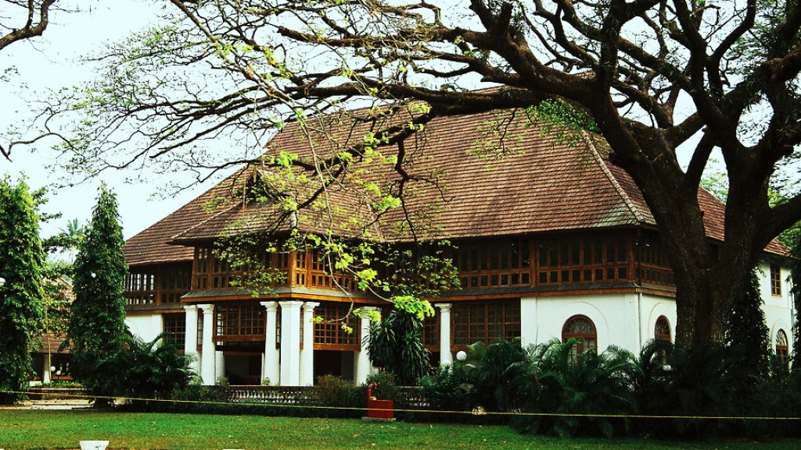

FORT KOCHI

Fort Kochi, the western part of the Kochi city of Ernakulam district in Kerala. It is about 12 km away from Ernakulam Town. Fort Kochi has played an important role in the history of Kerala. Fort Kochi also has several attractions like the Santa Cruz Basilica. Fort Kochi also houses many historical monuments such as the St. Francis Church, the first church of Vasco da Gama, the Dutch Seminary, the China Vela and many others. The Indian Navy’s ship, Dronacharya, is located in Fort Kochi.The Mattancherry Palace is close by. Fort Kochi was the first European township in Kerala.
Read More...Bolgatty Palace

This is the oldest palace built by the Dutch outside the Kingdom of Holland. The palace was built by a Dutch merchant in 1744. Later, it was renovated with a magnificent lawn and a number of reforms. The palace served as the official residence of Dutch Governor. In 1909, the palace was purchased by the King of Cochin for the English East India Company. The palace was the residence of British governors during the British rule.
Read More...Hill Palace

Hill Palace, built in 1865, is the largest archaeological museum in Kerala and the administrative center of Cochin. The palace consists of 49 buildings in the local style of 54 acres and includes the Hill Palace Archaeological Museum, Heritage Museum, Deer Park, Prehistoric Park and Children’s Park. There are many medicinal plants around the palace. The Museum Hill Palace is now open to the public for days on Mondays. The Hill Palace is located at a distance of 14 km from Kochi. Hill Palace was built in 1865 by the Maharaja Of Cochin using his personal wealth.
Read More...